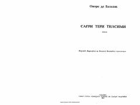

STInson istaklari va umr o'rtasidagi fojiali bog'liqlik haqidagi roman.
Ushbu asar buyuk yozuvchi Onore de Balzak qalamiga mansub bo'lib, inson istaklari va hayotiy quvvatning o'zaro bog'liqligini fosh etadi. Sag'ri teri egasining har bir istagini bajarishi evaziga uning umrini qisqartirib borishi fojiasi orqali jamiyat illatlari ochib beriladi.